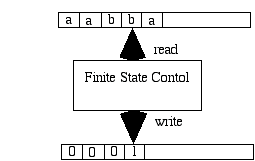
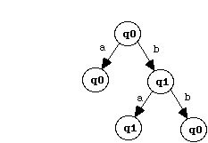

Introduction to Jacaranda
Contents
-
Finite-State Automata
-
Finite-State Transducers
-
Documents
-
Framework Name
Aim of this Java framework realization is to provide an easy and
customizable design for the implementation of different finite-state machines
(FSM).
The added value in respect to other implementations is the framework
character of the system, which offers different flexible and customizable
parts (hot spots) through which the user not only can change, as usual,
the content of the finite-state machine updating the input document with
different states and arcs relations, but also customize it in different
ways, including type of arcs, kind of output, way of traversing, etc.,
creating its own instance of the desired FSM.
I begin this introduction briefly explaining some concepts on finite-state
machines and, above all, introducing some terms, used all over the documentation.
1. Finite-State Automata
A deterministic finite automaton is a mathematical model of a machine that
accepts a particular set of words over some alphabet E.
An informal abstraction of the concept can be shown visualizing the
automaton through a black box representing the finite-state control which
reads an input tape. When the read head reaches the end of the input word,
the black box informs whether the word has been accepted. This mechanism
is also called finite-state acceptor.

Although finite automata are usually thought of as processing strings of
letters over some alphabet, the input can conceptually be elements from
any finite set.
In the Jacaranda object-oriented framework implementation the finite
set can be built with any kind of object.
Definition
A deterministic finite-state automaton (DFA) is a quintuple <E,S,s0,d,F>
where:
-
E is the input alphabet (a final non empty set of symbols).
-
S is a finite non empty set of states.
-
s0 is the initial state, element of S.
-
d is the state transition function. d: S x E -> S.
-
F is the set of final states, a subset of S.
The input alphabet, E, for any deterministic finite automaton A,
is the set of symbols that can appear on the input tape. Each successive
symbol in a word will cause a transition from the present state to another
state. The transition is described by the state transition function. For
deterministic finite-state automata there is exactly one state transition
for each combination of a symbol a and a state s.
To produce a formal description of a DFA it is necessary to enumerate
each part of the quintuple that comprises it. The state transition diagram
is used to display the transitions of the d function and at the
same time to illustrate the other four parts of the quintuple.
Example
Let describe a simple DFA with an alphabet of two symbols (1 and 0), which
accepts all kinds of words where the symbols 1 appears an odd number of
times.
A = <E,S,s0,d,F>
where
-
E = {0,1}
-
S = {q0,q1}
-
s0 = q0
-
F = {q1}
and d is represented by the following transition table:

And here is the state transition diagram:

Non Deterministic Finite Automata
A non deterministic finite automaton (NDFA) is a generalization of the
deterministic machines. Important for the recognition ability is that the
class of languages recognized by NDFA is exactly the same as the class
of languages recognized by DFA, i.e. their recognition powers are equivalent.
The Jacaranda framework allows the full customization of the traversal
algorithm responsible for the recognition of input words. As "out of the
box" implemented variants the frameworks offers the deterministic traversal,
as well as the non deterministic one.
2. Finite-State Transducers
The finite-state automata are useful when the task is to reliably recognize
a sequence, delivery "yes" or "no" as only result. They do not produce
output.
Finite-state machines able to accepts input sequences and translate
them into output sequences are called sequential machines or transducers.
Those machines have transitions from one state to the other which generate
an output symbol while accepting an input one.
The black box representation used for DFA can also be proposed for
transducers, adding an output tape.

Application of these machines can be elevators, traffic lights and
other devices that monitor and react to limited stimuli.
One important application is in the field of computational linguistics:
word form analysis and word form generation has proved to be best realized,
for performance and memory need, with finite-state transducers.
Definition
A finite-state transducer (FST) is a sextuple <E,I,S,s0,d,w> where:
-
E is the input alphabet.
-
I is the output alphabet.
-
S is the set of states, a finite non empty set.
-
s0 is the initial state.
-
d is the state transition function. d: S x E -> S.
-
w is the output function. w: S x E -> I.
The formal definition does not specify the set of final states,
as the DFA definition does. This is because conceptually the transducer
builds its output chronologically. In many concrete applications, however,
the transducer is used to accumulate a result, that must be confirmed when
the entire input word has been processed. In such cases we need to specify
the set of final states.
Within the Jacaranda framework a transducer is simply seen as an extension
of an automaton. The definition of final states is then included and straightforward.
Example 1
The first example represents a FST which flags occurrences of the pattern
AAB by printing a 1 on the output tape, only when the substring AAB appears
in the input stream.
Notice the use of "/" (slash) to separate input element from output
element within a single arc.

Example 2
The second example represents the application of a FST for word forms analysis
and generation.

Notice the use of final states, as confirmation of the output generated
during the traversal.
In this representation not only single characters, but also full symbols
are shown as part of the alphabet.
Because the Jacaranda framework uses objects for the single arcs, this
causes no problem for the application developer. I have however described
in the second cookbook receipt how the framework offers the opportunity
to code further information at the end of each recognized sequence. This
seems an even better solution for this particular case, because the symbols
"+Base", "+Past", etc. are not really part of the sequence to analyze or
generate, rather they are information to deliver at the end of the recognized
sequence, together with its generated output.
Another important remark offered by this particular application is
the bi-directional use of the transducer. You can traverse it accepting
input elements and generating output ones, but you can also traverse it
accepting output elements while generating input ones as result. This is
why with the same transducer you can analyze the word form "dined", saying
that it is a past form of "dine", as well as generating "dines" and "dined"
as output of the citation form "dine". Both directions can deliver more
than one result. The traversing must therefore consider the non deterministic
character of the FSM.
This functionality is fully supported by the Jacaranda framework, which
allows the sharing of data for different purposes. In the framework terminology
I call analysis the input/output direction, and generation the output/input
one.
3. Documents
The documents used as input of the framework, while allowing customizable
kinds of arcs and information for final states, have a formal syntax.
Here is its description, using EBNF notation. I will mention it again
in the first recipe of the cookbook.
document = {state | place-holder}+.
place-holder = index.
state = (empty-flag {arc}+) | (info-flag {arc}).
empty-flag = "}".
info-flag = "{" {index}+ "}".
arc = input-element output-element.
index = [-] {digit}+.
input-element -> customized element.
output-element -> customized element.
The following text is an example using characters as input and output
elements:
}ccmm
}aa
}tt
}hh
}oo
}dd
{1}s#
{2}
}ee
2
The last element is a place holder for an existing cluster. This
allows a recursive mechanism and a fairly high compression rate, which
corresponds to transforming a trie structure into a FSM.
A conversion tool (shaken Jacaranda) is needed to produce documents
starting from a list of words, converted first into a trie and then into
a minimized finite-state structure to be accepted as input by the framework.
The tool is not part of this release (different test documents with hundreds
of states are delivered with the framework). However, if the structure
of the FSM is known, the document can be produced very easily.
Let me show how to proceed starting from the following known DFA (only
transforming the previous used alphabet {0,1} into {a,b}, to be able to
read the document more easily at the end of the process, avoiding confusion
with the numbers referring to the states):

There are three steps to perform:
-
Stretch graphically the FSM (in this case a simple DFA) into a tree, using
the initial state as root and creating a new child for each arc. Recursively
repeat the transformation in a leftmost recursive way for each new generated
child until each state of the FSM is represented once with all its children.

-
Reading the resulting tree in a leftmost recursive way, transform each
repeated state into a place holder (shown as small square in the following
representation). The resulting tree should appear with all leaves represented
as square.

-
Copy the elements into a text file always following the leftmost recursive
descent, considering the following:
-
If no particular output information needs to be coded into a final state,
the latter can be represented with whatever index.
-
Each state will use a text line in the file to represent its state information
and its list of outgoing arcs. Each line representing a full state has
an implicit incremental index, starting by 0. This index is used by the
place holders to refer to their original state.
-
A place holder is simply an index, referring to its original state.
Here is the final document for the considered FSM:
}ab
0
{1}ab
1
0
The formalism is quite simple and could be easily generated by the formal
description of the FSM. But this is not the peculiarity of the system,
which is intended to be used, in a customized way, for large FSMs, with
many thousands of arcs and states, as it is partly shown in the second
receipt of the delivered cookbook.
4. Framework Name
The name of the framework, Jacaranda, comes from the name of the impressing
trees that I had the chance to admire every day on the streets of Pretoria,
South Africa, during my two months sabbatical period around October 2000
at the local university, where I had the opportunity to design and implement
the software.
The Jacaranda tree is originally native
of South America, specifically Argentina. The botanical name is Jacaranda
mimosifolia of the family Bignoniaceae. The tree has adapted well to the
warmer parts of southern Africa and today the main concentrations are in
the region around Pretoria and Johannesburg.
Although the Jacaranda tree is not indigenous to South Africa, it has
become synonymous with Pretoria so that the city is often referred to as
the Jacaranda city. The large number of Jacarandas along the streets of
Pretoria burst into lilac every October, turning the city into a spectacle
that defies description.
Jacaranda is also the name of the radio channel (FM 94.2) I was used
to hear during breakfast time in Pretoria (I like such kinds of routines...).
The algorithm that I use to prepare the input data for the framework
starts from the bottom of a trie structure, i.e. a particular tree structure,
removing every redundant node, when possible, and reducing the trie structure
into a finite-state machine structure. I developed the algorithm some years
ago and I called it "shaken trie", because of its characteristic of making
the leaves of the trie falling down during the process of shaking. The
similarity goes well with a shaken
Jacaranda losing blooms in October.
But I am not only romantic. As a matter of fact the framework has been
fully implemented in Java, and the first "J" of Jacaranda is there to confirm
it...
sp 2000